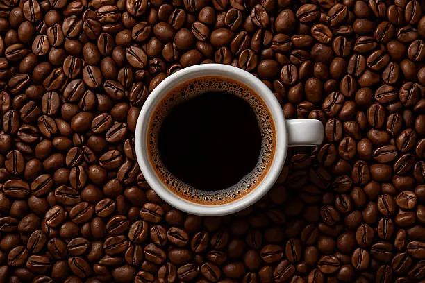
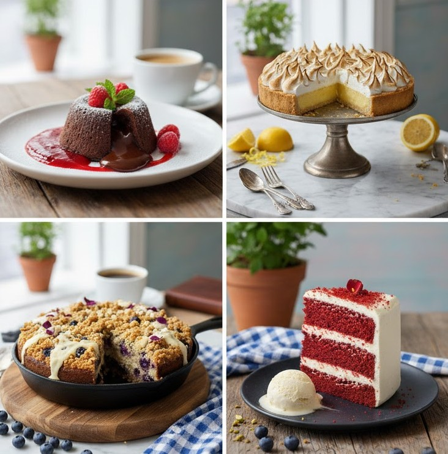
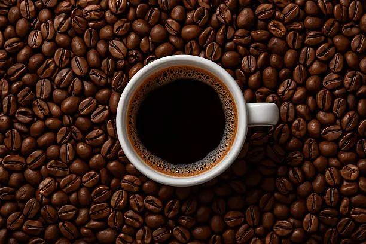
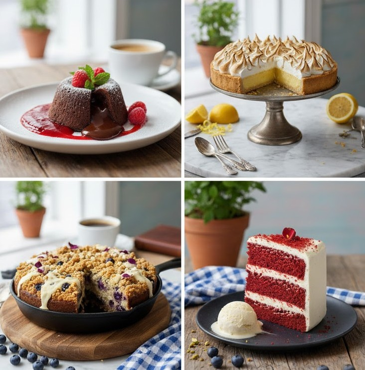

Seu refúgio para um café perfeito
Um lugar para relaxar, trabalhar ou simplesmente desfrutar de um grão selecionado com carinho, preparado por quem entende de café.
 



Menu do Dia
- Expresso Duplo
- Capuccino cremoso
- Bolo de cenoura com cobertura de chocolate
- Cheesecake de frutas vermelhas
- Fratte
Nossa História
O Café Aconchego nasceu do sonho de criar um espaço onde a qualidade do café e o calor humano se encontram. Cada detalhe, da escolha do grão à decoração, foi pensado para proporcionar uma experiência única e acolhedora.
O que nossos clientes dizem
"O melhor café da cidade! O ambiente é super tranquilo, perfeito para trabalhar."
- Laura Oliveira"Atendimento impecável e o bolo de cenoura é divino. Recomendo a todos!"
- Carlos Pereira